Built with curiosity. Revised with evidence. Maintained with dinner.
Leaked from KarinaOS™: The System Is Working Exactly as Designed. Unfortunately...
KARINAOS™ INTERNAL REVIEW
Subject: Getting coursework done
Status: Leaked
First recommendation: "Try harder."
Engineering response: "We already tried that update. What, exactly, are we changing?"
Being a student sounds easy when you leave out the student.
Receive assignment. Do assignment. Submit assignment.
Three steps. Beautiful. Practically a brochure.
Then I enter the process.
I need to understand the instructions, find the reading, connect the ideas, decide where to start, and
remember which website wants which submission. Other responsibilities compete for the same hours. My
energy does not arrive in equal amounts every day. Somewhere in there, I also need to eat.
So I build systems: schedules, assignment maps, checklists, and places to store information. There is even
a Karina Workstation user manual. Apparently, once you give enough technology a personality, you
eventually become the technology.
I call this KarinaOS™.
Underneath the dramatic branding is a real design question: how can I spend less time figuring out
how to do the work and more time actually doing it?
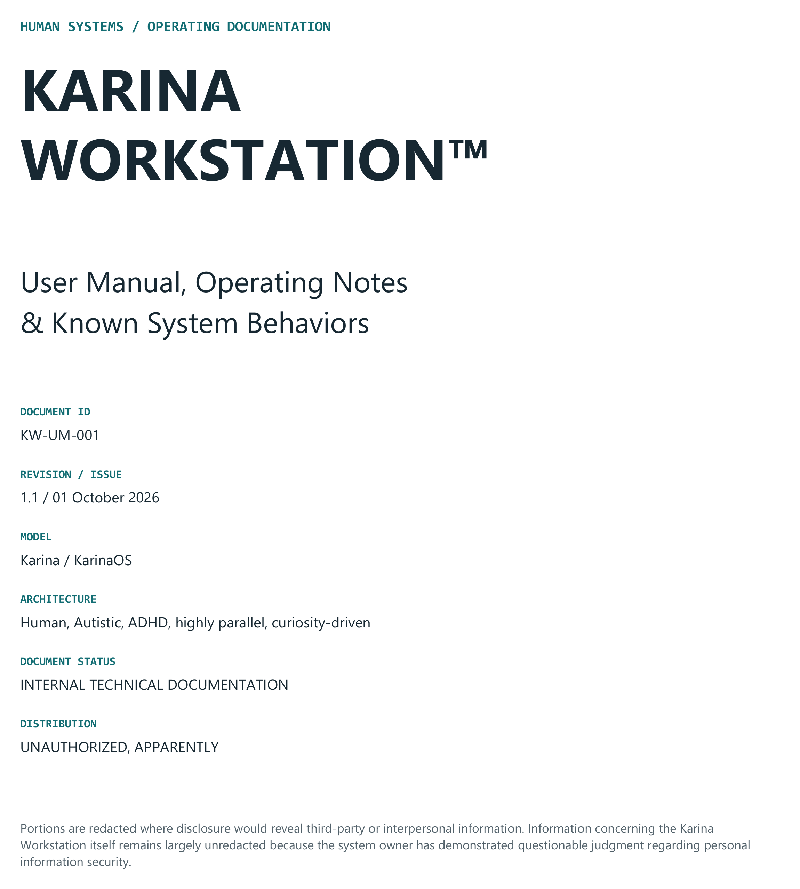
Exhibit A: Internal Karina Workstation documentation. Distribution status: unauthorized, apparently.
A Pile of Useful Things Still Needs a Plan
Systems thinking means looking at how connected parts affect each other and create a result. It also means
asking how that result changes what happens next.
Instead of blaming the first thing that looks broken, I can ask: What is this system supposed to do? What
parts contribute to that outcome? How do they interact? What else affects them?
Holt (2023) explains that understanding the relationships between system elements matters as much as
understanding the elements themselves. An interface is where information or material passes
between those elements (p. 6).
That sounds technical, but the idea becomes easier to see when I treat KarinaOS™ as a model.
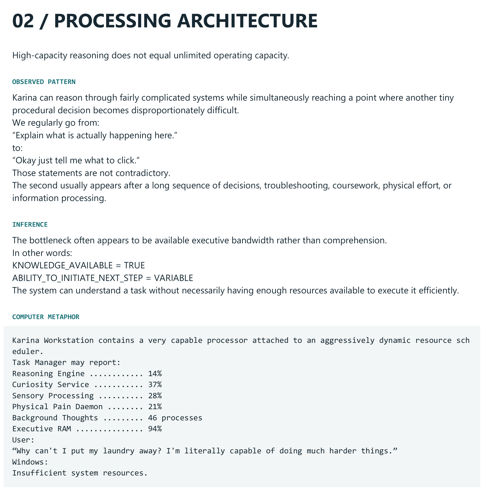
Exhibit B: KarinaOS processing architecture represents several processes operating simultaneously
and competing for available resources.
The manual represents processes such as reasoning, curiosity, sensory processing, physical demands,
background thoughts, and executive resources as competing processes inside a very questionable Task
Manager. Obviously, my brain does not literally run CuriosityService.exe. The joke works
because the model represents something real: several conditions can interact while I am trying to
accomplish one apparently simple task.
For this example, the system I am examining is my coursework process. Its purpose includes learning and
submitting appropriate work. Canvas, GitHub, course materials, schedules, and other tools interact with
that process, even when I draw some of them outside the system boundary.
A system's boundary defines what is included in the study. Holt (2023) notes that different people
may draw that boundary differently (pp. 8–10). That choice matters. If I model coursework as nothing more
than “student receives assignment and student completes assignment,” I have created a very tidy model.
When the Simple Model Stops Working
At the beginning of this post, I reduced coursework to three steps: receive assignment, do assignment,
submit assignment. Linear thinking follows that same kind of straight path: A leads to B, then B leads to
C.
That is not inherently bad. Clear procedures often need a linear sequence. Fetch the repository, edit the
file, preview it, commit it, and push it. Those steps have an order for a reason.
The problem comes when I assume that the ordered steps explain the whole system.
The KarinaOS manual contains an excellent example.
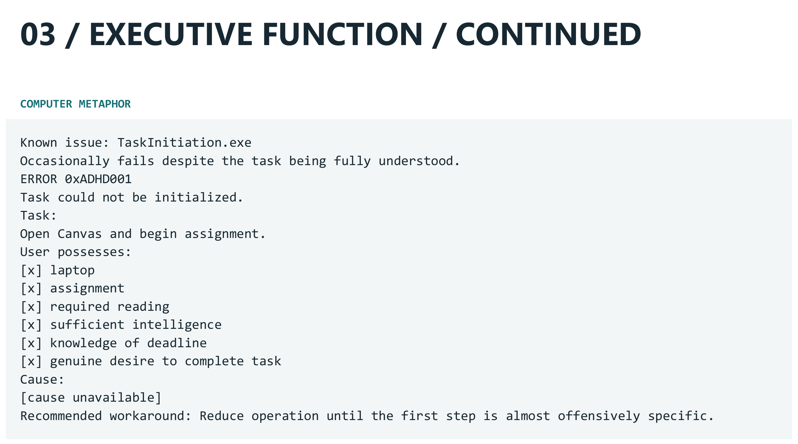
Exhibit C: TaskInitiation.exe demonstrates a failure that the simplest model does not adequately
explain.
According to the incident report, the system possesses:
a laptop,
the assignment,
the required reading,
knowledge of the deadline,
sufficient intelligence,
and a genuine desire to complete the task.
And yet TaskInitiation.exe may still fail.
Cause: ¯\_(ツ)_/¯
The joke exposes a problem with the simple model. If possessing the necessary resources
and wanting to complete the assignment were enough to reliably produce task initiation, the operation
should succeed.
It does not always succeed.
That means the model needs more information.
Suppose I put off an assignment because I have not found a direction yet. Waiting leaves less time to
explore the topic. Less exploration produces less clarity. Less clarity makes starting feel harder, so I
wait longer.
The result has now fed back into the original problem.
Holt (2023) identifies unmanaged complexity, failed communication, and poor understanding as connected
causes of system failure. Each can contribute to the others (p. 14). “Started late” describes an outcome.
Systems thinking asks what interactions helped produce it.
That question is much more useful than “Why can't I just do the thing?”
Change the System, Not Just the Lecture
Once I look at the problem as a system, I can experiment with changing its conditions. That is where my
Seed → Anchor → Burst strategy comes from.
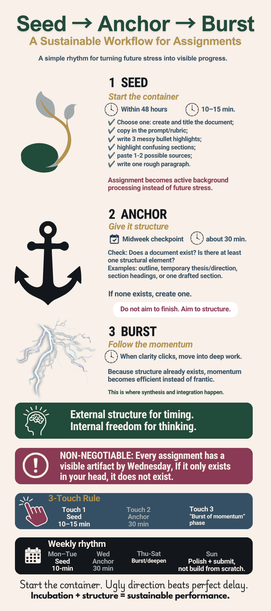
Seed → Anchor → Burst changes the conditions around starting an assignment instead of relying on
motivation alone.
The Seed is a short first visit to the assignment. I might create the document, copy the
prompt, write three messy thoughts, or highlight something confusing. It takes about ten to fifteen
minutes.
The Anchor is a midweek check. Does the document exist? Does it contain an outline,
headings, sources, or some visible direction? If not, I create something tangible.
The Burst is where I follow the momentum when the ideas begin connecting.
The goal is not to force myself to produce a polished introduction on command. The goal is to change the
starting conditions. Instead of expecting “begin assignment” to mean “understand everything and start
writing the final product,” I give the thinking somewhere to land.
STARTUP INSTRUCTIONS:
Open document. Add one useful thing.
Complete understanding may install later.
Linear thinking still has a role here. Seed, Anchor, and Burst provide a path through the work. Systems
thinking helps me understand why changing that path might change the larger outcome.
The Same System Does Not Always Need the Same Interface
KarinaOS also changes state.
The manual documents one failure mode as EXECUTIVE_BUFFER_OVERFLOW.
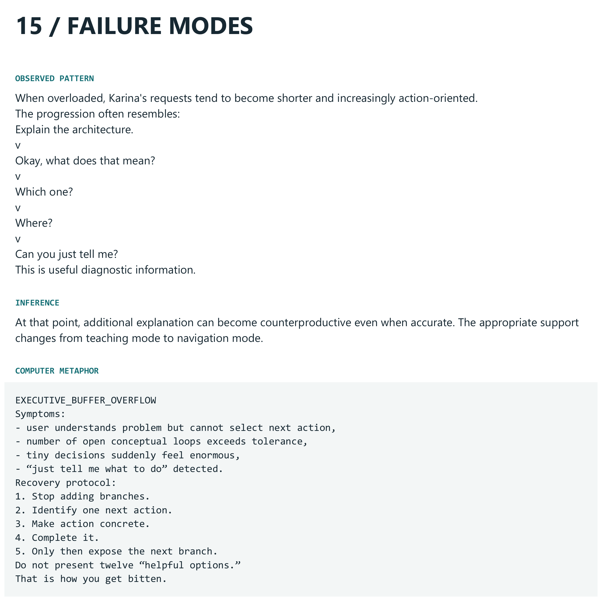
Exhibit D: As available resources decrease, the same system may require a different interface.
When resources are available, I might ask:
“Explain the architecture.”
As those resources disappear:
“Okay, what does that mean?”
“Which one?”
“Where?”
Eventually:
“Can you just tell me?”
The underlying person has not been replaced halfway through the conversation. The state of the system has
changed.
That matters when designing an interface.
A detailed explanation can be useful when I have the resources to process it. During overload, that same
explanation can add another problem to solve. The better interface might provide one concrete next
action.
That idea scales beyond KarinaOS. A digital environment should not merely contain all necessary
information. Designers also need to consider how people encounter it and what they must do with it.
This is one reason I appreciated seeing the design of this course itself. In the course walkthrough,
Bjorge (n.d.) explains that information in a previous version of the course interface could become lost
during scrolling. The revised design breaks material into shorter pages, tabs, and smaller assignment
sections. She even encounters and fixes a navigation issue during the walkthrough. Holt (2023)
distinguishes essential complexity, which belongs to the system, from accidental
complexity, which can result from inefficient people, processes, or tools (p. 15). Understanding
systems engineering requires effort. Hunting around an interface for the assignment instructions adds a
different kind of effort.
A designer can study a complicated system and still give the user a simple path through it.
KarinaOS Needs an Environment
This is also how I am approaching The Cybernetic Desk Workspace, my SharePoint environment
for organizing coursework.
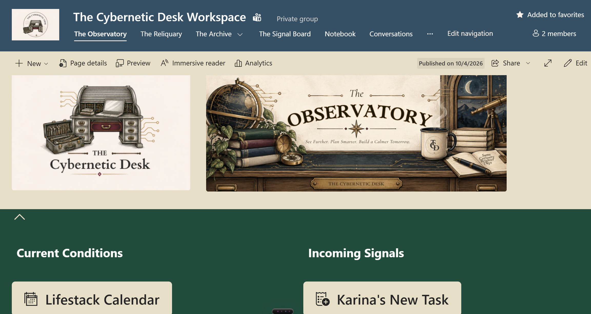
The Cybernetic Desk applies the same systems thinking to the digital environment surrounding
KarinaOS.
The design question is not simply, “Where can I store my syllabi?”
It is: How does information become useful work?
How does a syllabus become deadlines? How does a deadline become preparation? How does an assignment
become a Seed task, an Anchor checkpoint, and eventually a submission?
Lifestack gives me another view of that environment by moving assignments into actual blocks of time.
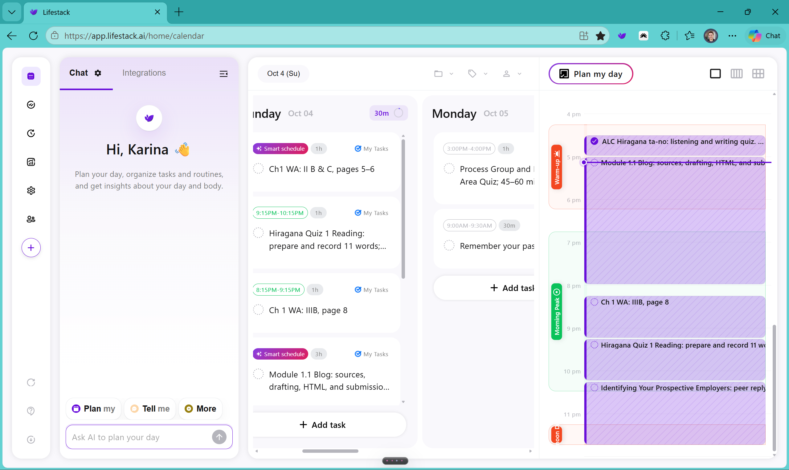
Lifestack provides another view of the system by making the relationship between coursework and
limited time visible.
Giving this blog post three hours means those hours are no longer available for something else. The
calendar makes that relationship visible so I can inspect and adjust it.
More features, however, do not automatically make the system better.
CHANGE REQUEST: Add more reminders. Expected result: Nothing gets forgotten. Possible result: User now needs a reminder to check the reminders.
NASA's systems engineering guidance emphasizes evaluating the whole design and balancing competing needs
rather than optimizing one part at the expense of another (National Aeronautics and Space Administration
[NASA], 2016). A reminder can function perfectly while making the overall experience worse. A dashboard
can display every assignment while still failing to answer, “What should I do next?”
For my workspace, better questions are: Does this reduce repeated planning? Can I find the next action? Can
I trust the deadline? How much effort does maintaining this feature require?
The icons may be beautiful. They still need to earn their place.
KarinaOS Is Not Karina
This is where model-based systems engineering, or MBSE, becomes especially
interesting.
The International Council on Systems Engineering (INCOSE, n.d.) describes MBSE as the formalized
application of modeling to support activities such as requirements, design, analysis, verification, and
validation throughout a system's life cycle. Holt (2023) explains that in a traditional document-based
approach, documents contain information about the system. In MBSE, a model holds relevant information
and represents how it fits together (p. 33). KarinaOS gives me an unexpectedly useful way to think about
this distinction because KarinaOS is not actually me.
It is a model.
The manual selects observable behaviors, recurring interactions, resources, constraints, and failure
states and represents them using a ridiculous computer metaphor. It deliberately leaves things out.
That does not automatically make KarinaOS an MBSE model. My personal documentation does not suddenly
become a formal engineering methodology because I named something TaskInitiation.exe. Holt
(2023) also emphasizes that SysML and MBSE are not the same thing (p. 55). A model needs a defined method
for creating, checking, changing, and using it.
But the manual helps me understand why models are useful.
A useful model does not need to reproduce every detail of reality. Holt (2023) argues that a model should
contain enough useful information to help develop a successful system rather than simply collecting
everything possible (p. 33).
The KarinaOS manual even contains a section called Things This Manual Does Not Establish. It
cannot prove whether every behavior comes from autism, ADHD, physical state, stress, environment,
personality, or some interaction among them.
The model is incomplete.
So is every useful model.
Its purpose is not to become the human. Its purpose is to give me something I can inspect.
The System Is Working Exactly as Designed
Systems thinking has changed the question I ask.
Instead of:
“Why can't I just do the thing?”
I can ask:
“What relationships are producing this outcome?”
Where is information getting lost? Where is unnecessary friction being introduced? What changes when
resources decrease? Which parts actually need to be connected? Where would a small intervention change
what happens next?
That does not mean every difficulty can be engineered away. It means I have a better framework for
deciding what is worth redesigning.
The final observation in the Karina Workstation manual says:
“When the default interface doesn't work reliably, Karina builds another interface.”
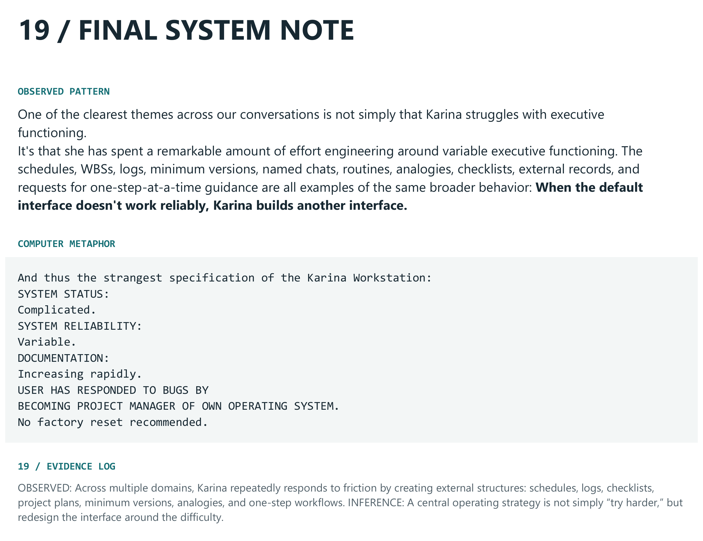
Final system note: redesigning the interface can be more useful than repeatedly demanding different
behavior from the same system.
That may be the most useful thing I have learned from accidentally becoming the operating system.
Schedules, assignment maps, Seed checkpoints, external storage, Lifestack, and The Cybernetic Desk are not
attempts to create the world's most complicated planner. At least, they are not supposed to be.
They are attempts to design an environment that interacts better with the system using it.
The goal is not:
Try harder.
The better engineering question is:
What, exactly, are we changing?
KARINAOS™ REVIEW CLOSED
Approved goal: Less repeated planning. More actual work.
Next action: Seed the assignment.
Unnecessary new features: Under observation.
Module 1.2 · Thinking in Life Cycles
KarinaOS™ 2.0: You Can't Patch Your Way Out of a Bad Life Cycle
My first post introduced KarinaOS™, the unofficial operating system I use to organize coursework, responsibilities, and the limited resources of being a person. One of its projects is the Cybernetic Desk, a digital workspace for school, projects, and resources. Within that workspace, the Signal Board is a SharePoint list where I track assignments, deadlines, priorities, and the support I need to get started.
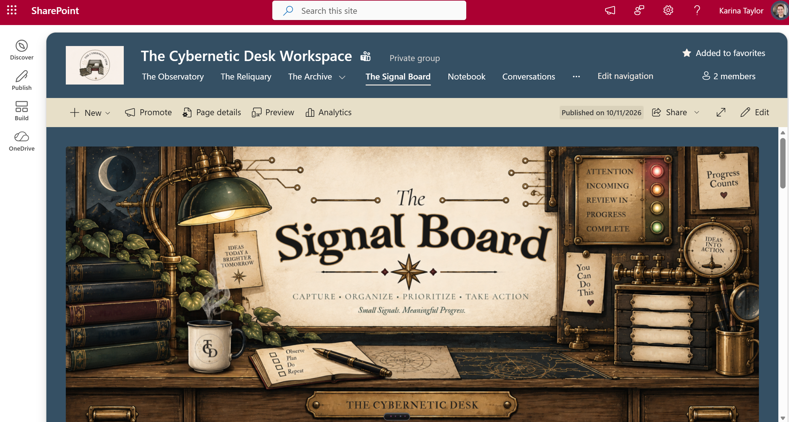
The Signal Board provides the assignment-management home within my Cybernetic Desk workspace.
The Signal Board provided a place to manage assignments, but entering them individually created another administrative task. I already had an Excel workbook called Class Assignment WBS, so I decided to use it for bulk intake. A Power Automate flow would read the spreadsheet, create the appropriate SharePoint items, and record which assignments had been imported.
Failed tests, date errors, empty rows, and partially completed operations turned a convenience project into a practical lesson in systems development. They also revealed why a useful system needs more than successful patches.
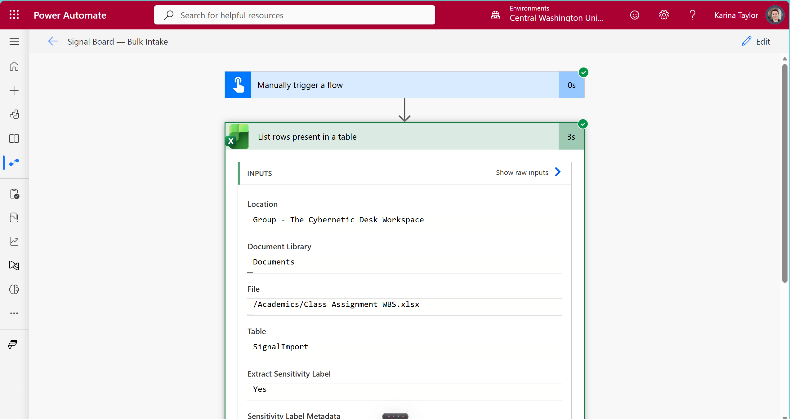
The Signal Board bulk intake workflow reads assignments from my Excel workbook. These steps succeeded; completing the transfer into SharePoint required further testing.
A system’s life extends beyond its first successful run
The systems development life cycle, or SDLC, organizes how a system moves from an identified need through development, use, support, and eventual replacement or retirement. Common activities include planning, requirements analysis, design, implementation, testing, deployment, and maintenance. Different frameworks organize these activities differently, but each addresses an important part of development.
Planning establishes purpose and feasibility. Requirements identify stakeholder needs and constraints. Design determines how components will interact, while implementation creates or configures them. Testing evaluates the result, deployment introduces it into use, and maintenance addresses defects and changing conditions. Retirement may involve migrating information, preserving records, or securely disposing of obsolete components.
Holt (2023) distinguishes a life cycle, which identifies stages in an entity’s evolution, from a life cycle model, which describes how those stages are executed (p. 144). Identifying development activities does not establish how work will move between them. Linear, iterative, and incremental models provide different ways to organize that progression.
For my workflow, success means transferring assignment information accurately, handling ordinary inputs, avoiding unnecessary duplication, and remaining manageable. A green checkmark provides evidence about execution. It does not establish that the system fulfills its purpose.
Linear development: the limits of an orderly plan
A linear model executes stages in a defined sequence, with each stage following completion of the previous one. Holt (2023) identifies its simplicity, clear stage gates, and suitability for small projects with stable needs and well-understood technologies. Its limitations become more significant when needs change or functionality cannot wait until the final release (pp. 145–146).
My initial plan followed a clear sequence: read the Excel rows, determine whether each assignment had already been imported, create a SharePoint item when appropriate, and update the original Excel row. The SharePoint item had to exist before its ID could be recorded in Excel.
However, an orderly plan can contain untested assumptions. I treated the spreadsheet as a collection of assignments ready for processing. Its table contained eighteen rows, most of which were empty placeholders, and the automation attempted to process them.
Other failures involved SharePoint field values and date conversion. The sequence made sense, but the information passed between components did not always satisfy the receiving component’s expectations.
This experience illustrates a risk of delaying feedback: later activities depend on earlier assumptions. Small tests could expose those assumptions before additional work accumulated around them. Linear planning remained useful, but its foundations needed checking.
Iterative development: learning through revision
An iterative model makes repeated passes through the life cycle stages. Holt (2023) describes each iteration as producing a working version that can be deployed, with later versions becoming more complete or improved. Benefits include progressive refinement and the possibility of returning to a previous working release. Drawbacks include changing stakeholder needs and pressure to release before a version works adequately (pp. 146–147).
My troubleshooting used iterative refinement within implementation and testing. Initially, I had difficulty configuring Excel’s “Update a row” action. The automation needed to identify the correct source row after creating its corresponding SharePoint item. Introducing a unique Import Key and mapping the SharePoint ID back into Excel addressed that problem, but others remained.
These debugging cycles illustrate iterative thinking, although they were not all complete, deployable iterations of the entire life cycle. NASA’s handbook similarly describes iteration at the process level as applying processes again to the same product to address discrepancies or variations from requirements (National Aeronautics and Space Administration [NASA], 2016).
Iteration made actual behavior available for evaluation. However, repeated changes became easier to manage when each had a specific objective: skip an empty row, identify the correct source record, or transfer a valid assignment. Without those questions, troubleshooting risked becoming a sequence of changes whose effects were difficult to distinguish.
Empty rows exposed incomplete requirements
The placeholder rows required a more precise definition of an eligible assignment. Before importing a row, the flow needed to establish that the assignment had not already been imported and that its Task Name contained meaningful content.
An apparently empty cell could contain a null value, an empty string, or whitespace. The condition needed to account for those possibilities instead of relying on how the spreadsheet looked.
I also reorganized the flow so that actions were placed in the correct conditional branch. Building the workflow revealed cases that the original description overlooked.
“Import assignments” became a more useful requirement when it included valid inputs, eligibility rules, and expected outcomes.
In Holt’s incremental model, the initial concept stage considers the overall needs, while subsequent development delivers subsets as usable partial solutions. Some functionality can therefore become available before the whole system is complete. However, the approach is unsuitable when a system cannot be divided into useful subsets (Holt, 2023, pp. 148–149).
The Cybernetic Desk illustrates the value of delivering capabilities in portions. The Signal Board provides assignment tracking, its existing connection to Google Tasks supports downstream planning in Lifestack, and bulk intake from Excel adds another capability. This resembles incremental development, although my workspace has evolved through discovery rather than from a completely specified initial plan.
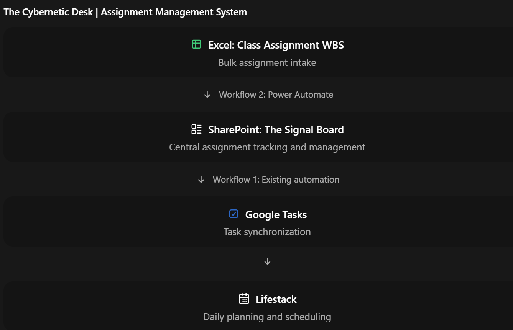
The Cybernetic Desk connects assignment intake, central tracking, and daily planning. Bulk intake adds a capability to the existing system.
A practical distinction is that iteration revisits and improves a version, while an increment delivers another portion of the intended capability. The approaches overlap: an increment can undergo several iterations, and an iterative release can add functionality.
Incremental development lets me improve intake without rebuilding the entire workspace. However, each addition still requires coordination. New capabilities can conflict with existing assumptions, duplicate information, or increase maintenance demands.
Partial success revealed an interface and recovery problem
One failed run created an assignment in SharePoint even though the overall flow reported failure.
Holt (2023) explains that system elements interact through interfaces supporting the exchange of flows or services (pp. 106–108). In my workflow, field mappings, identifiers, and date representations determine whether information moves meaningfully between Excel and SharePoint. Problems at those connections could affect the overall result even when individual actions succeeded.
Creating the destination item and updating the source row were separate operations. If SharePoint contained the assignment but Excel had not recorded that outcome, rerunning the flow could risk creating a duplicate.
Recording the SharePoint ID helps connect the records, but does not prove that every partial failure is handled safely. A future improvement would check whether the destination item already exists before creating another after an interrupted run. This remains an identified limitation rather than a capability I can claim is fully proven.
Verification and validation require different evidence
The breakthrough came through a controlled test. I entered a new assignment into Excel, left its Imported field blank, and ran the automation. It read the table, identified the eligible assignment, created the SharePoint item, marked the source row as imported, and recorded the SharePoint ID.
NASA (2016) distinguishes verification, which checks compliance with requirements, from validation, which checks whether a product serves its intended purpose in its intended environment. My test demonstrated the expected sequence for one input. Broader validation asks whether normal use reduces duplicate entry and administrative effort.
Holt (2023) also identifies repeatability, measurability, and demonstrability as desirable process properties (p. 164).
Further checks should examine previously imported records, blank rows, and recovery after partial failure. Repeated testing and normal use would provide better evidence of reliability and time savings, without imposing procedures disproportionate to a personal assignment tracker.
Sustainability includes the person maintaining the system
Sustainability concerns whether a system and its effects can endure responsibly. Becker et al. (2015) identify environmental, social, economic, technical, and individual dimensions of sustainability and emphasize their interdependence.
Applied to my workspace, these dimensions raise questions about device requirements, accessibility, time costs, information longevity, and well-being. These are applications of the researchers’ framework to my experience, rather than findings they measured about my workflow.
An automation that reduces data entry but requires constant troubleshooting may transfer effort rather than reduce it. Documentation, clear field meanings, stable identifiers, and understandable recovery procedures could make maintenance easier. Export and replacement plans also matter if my access or tools change.
Holt (2023) warns that processes can become unrealistic, irrelevant, or outdated and require periodic review (p. 165). A workflow that helps this quarter may need revision as coursework or technology changes.
Each model offers sustainability opportunities and risks. Linear planning can establish requirements early but overlook changing conditions. Iteration can reveal burdens but consume resources through repeated rebuilding. Incremental delivery can avoid unnecessary features while accumulating integration complexity. Tomorrow’s Karina should inherit a useful workflow, not an archaeological investigation into today’s conditions.
GitHub provides another example of staged development
My planned blog submission combines these approaches. The complete academic article comes first, while optional diagrams and visual improvements can follow through further commits to the same pull request.
Adding a diagram is an increment; correcting an explanation is iteration. Following the required submission steps provides an ordered sequence. The initial version must still satisfy the assignment, since required analysis cannot be deferred as an optional enhancement.
My earlier submission was awaiting merging and grading when I discussed this plan. That distinguishes making work available from receiving review.
The development process is part of the upgrade
No single life cycle model is appropriate everywhere. My workflow benefits from ordered dependencies, iterative learning, and incremental capability.
This experience showed me that a patch can be necessary without addressing the underlying problem. An incomplete requirement, unchecked assumption, or missing recovery procedure may require a change in how the system is developed and evaluated.
The Cybernetic Desk now has a bulk intake workflow that passed a controlled test, along with a developer who understands its limitations more clearly. Its next improvements can build on evidence rather than optimism alone.